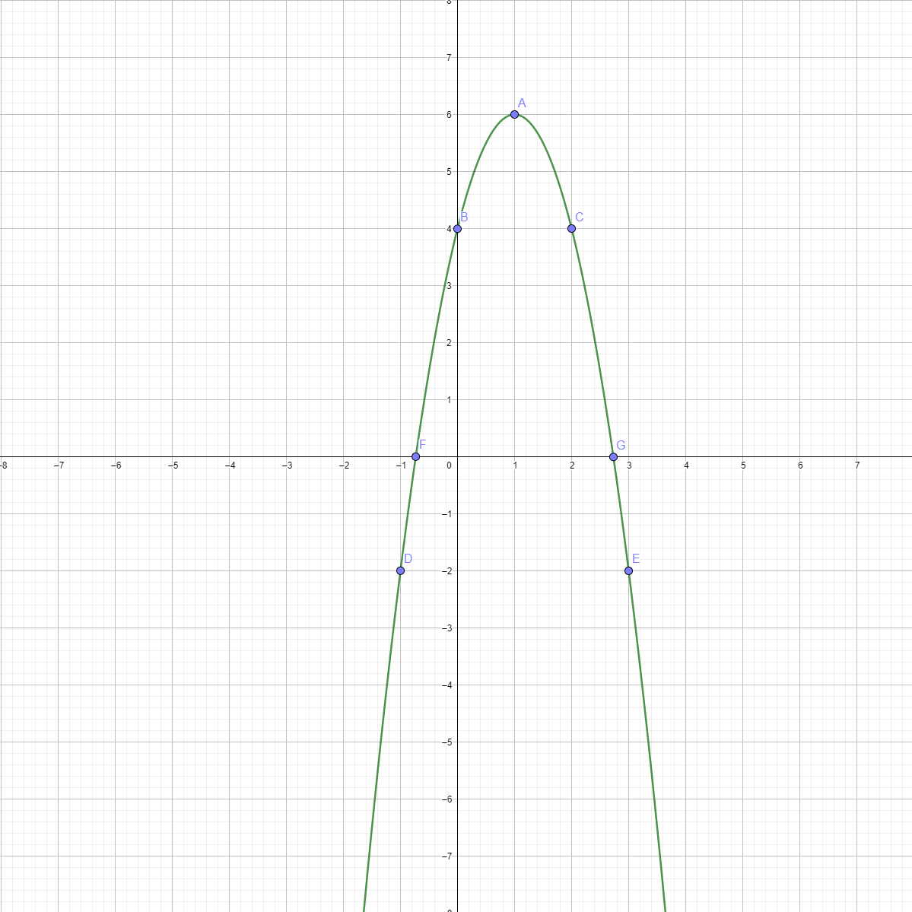

Parabola függvény példa
Hozzárendelési szabály: R ↦ R; h(x) = -2(x-1)2+6

| A |
B |
C |
D |
E |
F |
G |
| 1 ; 6 |
0 ; 4 |
2 ; 4 |
-1 ; -2 |
3 ; -2 |
-0,73 ; 0 |
2,73 ; 0 |
Jellemzők
- Értelmezési tartomány
- Értékkészlet
- Zérushelyek
- Monotonitás
- Csökken: [1 ; ∞[
- Nő: ]-∞ ; 1]
- Szélsőértékek
- Minimum érték: nincs
- Minimum hely: nincs
- Maximum érték: 6
- Maximum hely: x = 1